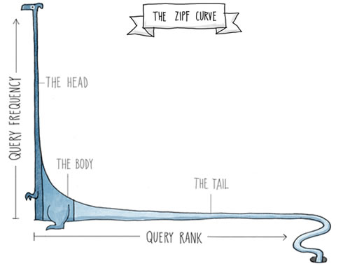
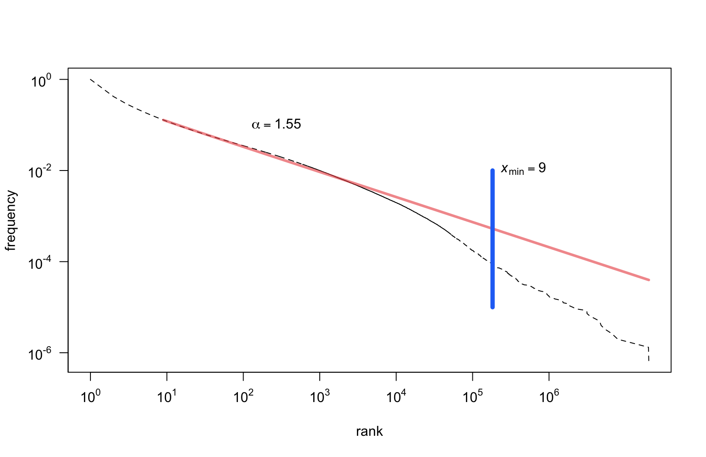

Zipf’s Law: an example

Maciej Eder, Rafał L. Górski, Joanna Byszuk



Maybe a well-known linear regression:
could be applied to a log-transformed dataset?
If in so doing one discovers a distribution that approximately falls on a straight line, then one can, if one is feeling particularly bold, assert that the distribution follows a power law, with a scaling parameter α given by the absolute slope of the straight line.
(Clauset et al., 2009)
Maximum likelihood estimators (MLEs) for continuous datasets
\[ \alpha = 1 + n \Big[ \sum_{i=1}^{n} \ln \frac{x_i}{x_{min}} \Big] ^{-1} \]
MLEs for discrete datasets:
\[ \alpha \simeq 1 + n \Big[ \sum_{i=1}^{n} \ln \frac{x_i}{x_{min} - \frac{1}{2}} \Big] ^{-1} \]
\(x_{min}\) is estimated using the Kolmogorov-Smirnov (KS) statistic:
\[ D = \max_{x \geq x_{min}} | S(x) - P(x) | \]

Stable, (un)expected Zipf results for both types and tokens
| Case | token | type |
|---|---|---|
| acc | 98% | 18% |
| voc | 95.5% | 10% |
| dat | 93% | 7% |
| loc | 91% | 3.5% |
| gen | 88% | 7% |
| inst | 75% | 2.5 |
| nom | 65% | 2.5 |


This research is part of project UMO-2013/11/B/HS2/02795, supported by Poland’s National Science Centre.